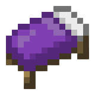

Hi! I'm TissuB
1.About Me
My passion for programming started when I was still a child, in fact I used to play
a lot of video games, and I always liked idea of finding out what was behind
every game I played, and so thanks to various courses and the computer expert
I am succeeding in my aim of becoming a full stack developer.
2.Projects
These are two projects that i have developed over time, unfortunately I cannot
reveal their code, or show them to the public as they are private.

A Bedwars plugin for Minecraft.
A cleaner tool for the computer.
Made With Love By TissU
3.Social
If you want, you can follow me on my socials: